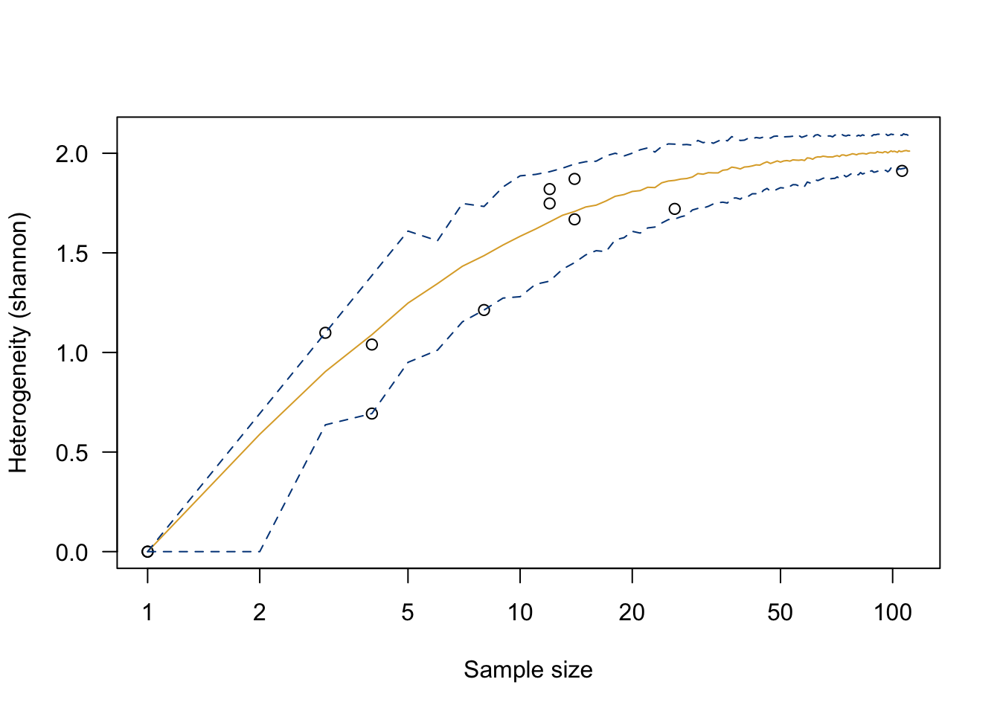
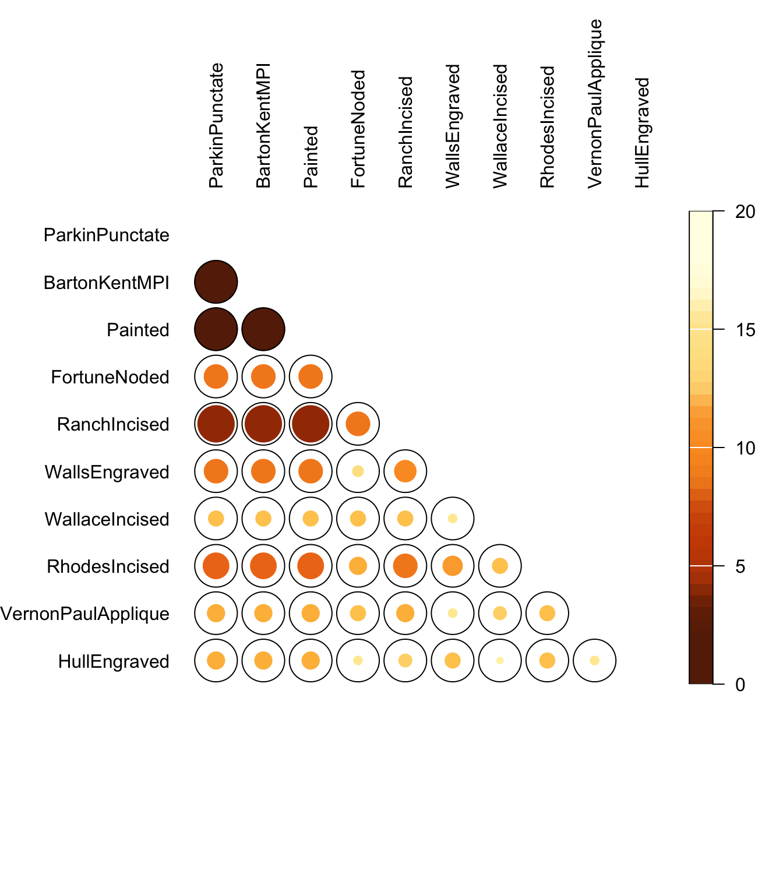
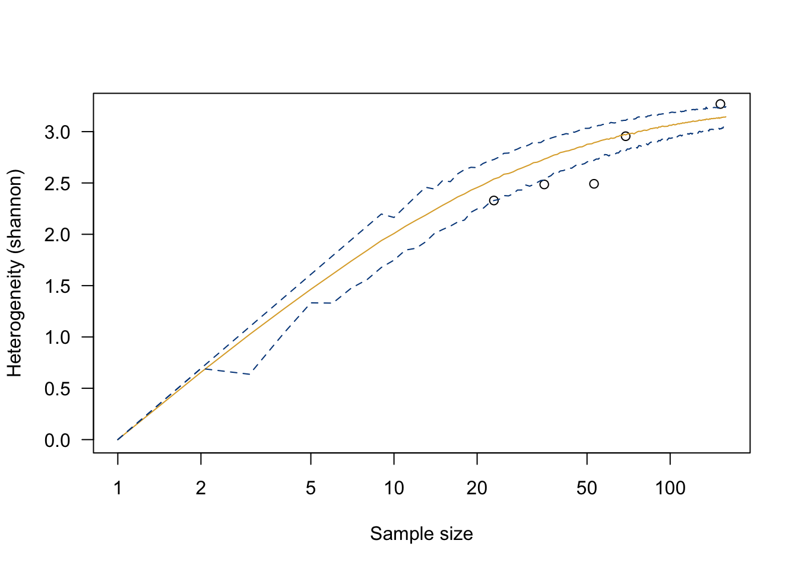
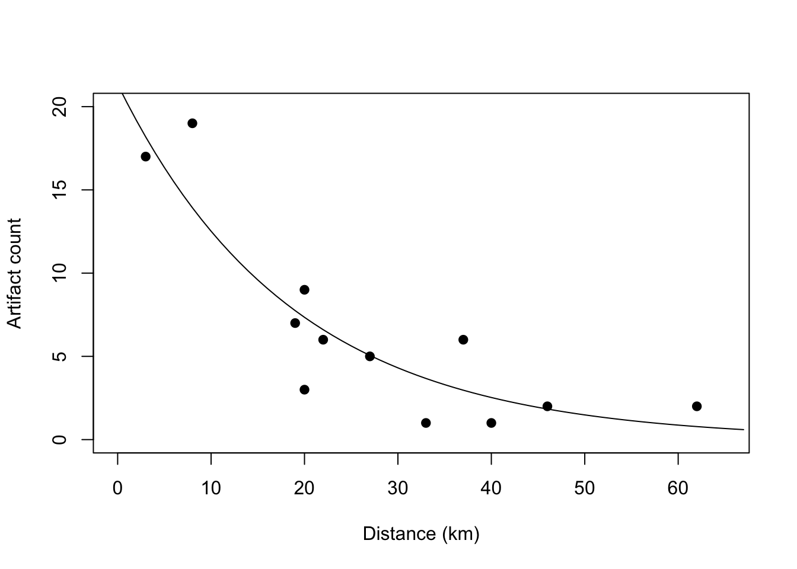
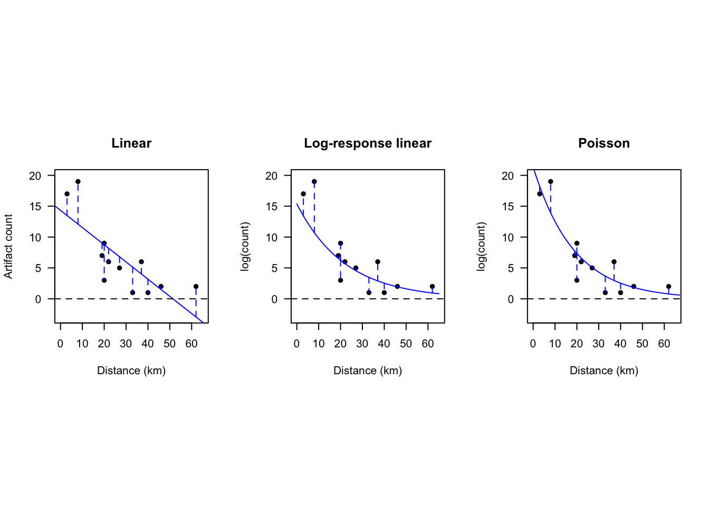

4 Working with Count Data
Archaeological data are commonly counts - of projectile points of various types, of donkey and zebra teeth, of diagnostic sherds associated with distinct periods or cultural groups, etc. A fundamental archaeological task is the comparison of these counts across time and space. A wide variety of analytical methods of varying complexity are employed primarily to identify and interrogate patterning in such count data - but some simple exploration and visualization is almost always valuable as well.
Some tools for working with count data, as well as sample data with which to work, can be found in Frerebeau’s tabula (2019); not to be confused with the software tool for scraping data) and folio (2025) packages. The examples below are adapted from the tabula documentation.
4.1 Frequency
A look at ?mississippi will tell you that these are counts of ceramic types from 20 sites in the Lower Mississippi Valley (Lipo, Madsen, and Dunnell 2015). These provide a useful example of archaeological count data (without necessarily entering into the theory and practice of seriation and arguments about cultural transmission).
library(tabula)
library(folio)
## Data from Lipo et al. 2015 in folio
data("mississippi")
kable(mississippi) %>% kableExtra::kable_classic(full_width = F)| ParkinPunctate | BartonKentMPI | Painted | FortuneNoded | RanchIncised | WallsEngraved | WallaceIncised | RhodesIncised | VernonPaulApplique | HullEngraved | |
|---|---|---|---|---|---|---|---|---|---|---|
| 10-P-1 | 39 | 62 | 46 | 0 | 0 | 0 | 0 | 0 | 0 | 6 |
| 11-N-9 | 528 | 198 | 13 | 0 | 19 | 0 | 0 | 0 | 0 | 0 |
| 11-N-1 | 865 | 323 | 59 | 17 | 35 | 0 | 0 | 0 | 4 | 0 |
| 11-O-10 | 404 | 208 | 6 | 16 | 4 | 0 | 0 | 0 | 0 | 0 |
| 11-N-4 | 764 | 470 | 18 | 5 | 9 | 0 | 0 | 0 | 0 | 0 |
| 13-N-5 | 35 | 11 | 33 | 0 | 0 | 0 | 0 | 0 | 0 | 0 |
| 13-N-4 | 71 | 67 | 96 | 0 | 3 | 4 | 0 | 0 | 0 | 0 |
| 13-N-16 | 42 | 56 | 69 | 0 | 1 | 3 | 0 | 0 | 0 | 0 |
| 13-O-11 | 35 | 65 | 24 | 0 | 0 | 2 | 0 | 1 | 0 | 1 |
| 13-O-10 | 61 | 74 | 79 | 0 | 2 | 8 | 0 | 2 | 0 | 0 |
| 13-P-1 | 244 | 40 | 18 | 1 | 16 | 21 | 0 | 14 | 0 | 6 |
| 13-P-8 | 83 | 25 | 43 | 0 | 18 | 17 | 0 | 3 | 0 | 3 |
| 13-P-10 | 30 | 15 | 12 | 0 | 12 | 12 | 0 | 7 | 2 | 1 |
| 13-O-7 | 590 | 498 | 67 | 10 | 21 | 19 | 12 | 8 | 7 | 1 |
| 13-O-5 | 923 | 637 | 42 | 12 | 33 | 27 | 15 | 13 | 5 | 2 |
| 13-N-21 | 426 | 69 | 105 | 4 | 4 | 0 | 1 | 4 | 1 | 0 |
| 12-O-5 | 204 | 156 | 42 | 7 | 8 | 4 | 2 | 1 | 0 | 0 |
| Holden Lake | 27 | 294 | 7 | 24 | 2 | 0 | 2 | 1 | 3 | 0 |
| 13-N-15 | 728 | 364 | 160 | 9 | 5 | 8 | 14 | 3 | 7 | 2 |
| 12-N-3 | 549 | 328 | 77 | 19 | 4 | 0 | 3 | 1 | 2 | 0 |
Archaeologists have been thinking about data like these for a long time (see (McNutt 2005) for a review)! The method implemented by tabula is derived from James A. Ford (1962), but Ford and Willey were already producing similar graphics more than a decade earlier (James Alfred Ford and Willey 1949), and Phillips, Ford, and Griffin devote a section (‘Seriation Analysis of Pottery Collections’ in Archaeological Survey in the Lower Mississippi Valley, 1940–1947) to this approach (Phillips, Ford, and Griffin 1951, 217–36).

4.2 Contingency Tables
Count data are the basis of contingency tables or cross-tabulations, which are the basis of \(\chi\)-square analysis and many multivariate approaches. They can also be informative without further analysis.
see Shennan (1997, Ch.13) see (Lewis 1986)
The plot_spot() and plot_bertin() functions are tools for visualizing these sorts of matrices (also, meet |>, another pipe function like %>%).


The occurence() function produces a co-occurrence matrix, a sort of contingency table with the same variables on both axes.
## ParkinPunctate BartonKentMPI Painted FortuneNoded
## BartonKentMPI 20
## Painted 20 20
## FortuneNoded 11 11 11
## RanchIncised 17 17 17 11
## WallsEngraved 11 11 11 5
## WallaceIncised 7 7 7 7
## RhodesIncised 12 12 12 8
## VernonPaulApplique 8 8 8 7
## HullEngraved 8 8 8 4
## RanchIncised WallsEngraved WallaceIncised RhodesIncised
## BartonKentMPI
## Painted
## FortuneNoded
## RanchIncised
## WallsEngraved 10
## WallaceIncised 7 4
## RhodesIncised 11 9 7
## VernonPaulApplique 8 4 6 7
## HullEngraved 6 7 3 7
## VernonPaulApplique
## BartonKentMPI
## Painted
## FortuneNoded
## RanchIncised
## WallsEngraved
## WallaceIncised
## RhodesIncised
## VernonPaulApplique
## HullEngraved 4These can also be visualized using plot_spot().

4.3 Diversity measures
See Baxter 2001 (M. J. Baxter 2001) Carlson (2017, Ch.18)
- “The simplest measure of diversity, richness is just the number of types in an assemblage” (p399)
- “…richness is usually correlated with assemblage size”
- “The transpose of richness is ubiquity, which is just the number of assemblages that contain a particular type” (p400)
- ” More types indicate a more diverse assemblage, but among assemblages with the same number of types, those with the same number of artifacts in each type are more diverse than assemblages having a dominant type with the remaining types having very few specimens.” (p400)
Shannon diversity measure (also called Shannon’s information index, Shannon–Weaver, or Shannon–Wiener). The measure comes from a 1948 paper by Claude Shannon who developed information entropy as a measure of uncertainty using concepts developed by Norbert Wiener. Shannon’s work was later popularized by Warren Weaver. The measure increases when there is more uncertainty in predicting what type a randomly selected artifact will be. High diversity (entropy) means that there are more types and the artifacts are spread more evenly over the types…
The Shannon index is calculated by assessing the relative proportion of each type in a sample:
\[H'=-\sum_{i=1}^{S}{p_i\ln{}p_i}\] H’ is the Shannon index, calculated by iterating through each (\(i^{th}\)) type in the sample and multiplying the proportion of the sample represented by that type \(p_i\) by the natural log of that proportion (\(\ln{}p_i\)); S is the total number of types (“species”, as originally formulated, since this was developed as an ecological measure).
Other indices are available, e.g. the Simpson index, which calculates how likely it is that two randomly drawn individuals will be of different types. The Simpson index (\(D_1\)) is calculated by iterating through the sample, squaring the proportion of each type and summing them.
\[D_1=\sum_{i=1}^{S}{p_i}^2\] The inverse of the Simpson index provides the effective number of species, which is the number of species/types that if evenly distributed would produce a similar diversity index. In effect it assesses the observed diversity but downweights or even discounts types that occur only rarely.
The vegan package provides a straightforward tool - diversity() - for calculating multiple diversity indices. We can test those using the ‘cantabria’ dataset - counts of forty-four distinct design elements on engraved bones from five Lower Magdalenian sites in northern Spain (Cantabria) - originally published by Conkey (1980) and included in the tabula package.
## Data from Conkey 1980, Kintigh 1989, p. 28
data("cantabria", package = "tabula")
kable(cantabria) %>% kableExtra::kable_classic(full_width = F)| X1 | X2 | X3 | X4 | X5 | X6 | X7 | X8 | X9 | X10 | X11 | X12 | X13 | X14 | X15 | X16 | X17 | X18 | X19 | X20 | X21 | X22 | X23 | X24 | X25 | X26 | X27 | X28 | X29 | X30 | X31 | X32 | X33 | X34 | X35 | X36 | X37 | X38 | X39 | X40 | X41 | X42 | X43 | X44 | |
|---|---|---|---|---|---|---|---|---|---|---|---|---|---|---|---|---|---|---|---|---|---|---|---|---|---|---|---|---|---|---|---|---|---|---|---|---|---|---|---|---|---|---|---|---|
| Altamira | 2 | 12 | 7 | 1 | 0 | 3 | 12 | 15 | 0 | 3 | 1 | 1 | 12 | 7 | 3 | 11 | 3 | 1 | 7 | 2 | 4 | 3 | 3 | 1 | 5 | 1 | 1 | 1 | 0 | 2 | 0 | 1 | 0 | 1 | 1 | 1 | 3 | 0 | 2 | 1 | 4 | 5 | 4 | 5 |
| Cueto de la Mina | 1 | 12 | 2 | 0 | 1 | 0 | 0 | 3 | 1 | 5 | 0 | 1 | 4 | 3 | 1 | 0 | 0 | 1 | 2 | 4 | 0 | 1 | 1 | 0 | 1 | 0 | 0 | 2 | 2 | 0 | 1 | 0 | 7 | 0 | 0 | 0 | 0 | 1 | 1 | 2 | 2 | 6 | 1 | 0 |
| El Juyo | 0 | 8 | 2 | 1 | 0 | 0 | 0 | 12 | 3 | 9 | 0 | 0 | 2 | 1 | 1 | 0 | 0 | 1 | 1 | 0 | 1 | 0 | 2 | 0 | 1 | 0 | 1 | 1 | 0 | 0 | 0 | 0 | 0 | 0 | 0 | 0 | 0 | 0 | 1 | 0 | 2 | 0 | 3 | 0 |
| El Cierro | 0 | 5 | 1 | 2 | 0 | 0 | 0 | 7 | 3 | 2 | 1 | 0 | 4 | 0 | 2 | 0 | 0 | 0 | 2 | 0 | 0 | 0 | 1 | 0 | 0 | 0 | 0 | 0 | 0 | 0 | 0 | 0 | 0 | 1 | 0 | 0 | 0 | 0 | 1 | 0 | 0 | 2 | 1 | 0 |
| La Paloma | 0 | 4 | 0 | 0 | 0 | 0 | 0 | 1 | 2 | 2 | 0 | 0 | 3 | 0 | 0 | 0 | 0 | 1 | 0 | 0 | 0 | 0 | 0 | 0 | 1 | 0 | 0 | 0 | 0 | 0 | 0 | 0 | 0 | 0 | 0 | 0 | 0 | 0 | 1 | 0 | 1 | 4 | 1 | 2 |
## Loading required package: permute## Loading required package: lattice## This is vegan 2.6-8## Altamira Cueto de la Mina El Juyo El Cierro
## 3.269200 2.955298 2.491683 2.485604
## La Paloma
## 2.329187## Altamira Cueto de la Mina El Juyo El Cierro
## 0.9506579 0.9283764 0.8814525 0.8979592
## La Paloma
## 0.8884688How can we interpret the numbers that result? These are index values, which is to say that they don’t mean much in isolation, but can be usefully compared to one another. That is, both Shannon and Simpson indices suggest that diversity of design elements on engraved bones is higher at Altamira than elsewhere.
These indices, and a few others, are also implemented in the tabula package with the heterogeneity() function.
## Measure diversity by comparing to simulated assemblages (after Kintigh 1989)
cantabria |>
heterogeneity(method = "shannon") ## [1] 3.269200 2.955298 2.491683 2.485604 2.329187In fact diversity measures are really a can of worms; see Erin & Buchanan 2022, and especially the Colwell & Chao chapter (Colwell and Chao 2022). The fundamental issue is how to compare diversity between assemblages with different sample sizes - which is usually exactly what we’d like to compare. Are larger samples are more likely to capture more diversity, making them hard to compare to smaller samples? How much attention should we pay to rare species/types?
## Measure diversity by comparing to simulated assemblages (after Kintigh 1989)
cantabria |>
heterogeneity(method = "shannon") |>
simulate(seed = 42) |>
plot()
See Baxter (2001, 718–21), who reexamines (Kintigh 1984; Kaufman 1998) and concludes that bootstrapping provides a more reliable means of comparing richnesss. What kind of resampling does tabula::simulate() implement?
The data are given in Kaufman (1998) in the form of a 44 x 5 table where columns correspond to different Early Magdalenian sites in Cantabrian Spain and rows to design elements on engraved bone artifacts. Entries in the original table correspond to counts of design elements from each site. The five sites Altamira (A), Cueto de la Mina (CM), El Juyo (EJ), El Cierro (EC), and La Paloma (LP) differ in their apparent richness, but also in terms of sample size. Altamira, with tty = 152 and Sj = 38, is apparently the richest, but there has been some debate about whether this is a real phenomenon or an effect of sample size (Kaufman 1998; Rhode 1988). In particular, it is of interest to know if Altamira is genuinely richer than Cueto de la Mina, which has a lower Sj = 27 but also lower ^ = 69, since different methods have suggested apparently different answers to this question (Kaufman 1998).
We can replicate Baxter’s (2001) Figure 2 - but Baxter uses that figure to illustrate some shortcomings of the simulation method that produces it.
cantabria |>
richness(method = "count") |>
simulate(seed = 42) |>
plot(log = "", pch = 1:5)
text(y = richness(cantabria, method = "count"), x = rowSums(cantabria),
labels = rownames(cantabria), adj = 0, pos = 2)
4.4 Regression with count data using generalized linear models (GLMs)
Linear regression (Drennan, Ch.15), it turns out, is not the only way to explore the relationship between numerical variables. Worryingly for archaeologists, linear regression turns out to behave demonstrably poorly with count data (Codding and Brewer 2024; Grant S. McCall and Villafranca 2024), which are of course very common in archaeology (archaeologists love counting things almost as much as they love classifying them). The problem lies in the way that linear regression assesses goodness-of-fit, which is through ordinary least squares (OLS). One of the assumptions of OLS is that values are reasonably normally distributed, which holds for measurements (e.g., projectile point lengths), but not for counts - counts of, e.g., sherds of various types across strata tend to have more small values than large values, and tend to include zeroes. A normal distribution, as a result, is a relatively poor approximation of their distribution. So, why use one, historically? As with other parametric statistics, there are practical reasons: assumptions of normality made it possible to use less computationally intensive methods. Only in the 21st century has sufficient computing power become widely available to make GLMs a viable alternative (see (Grant S. McCall and Villafranca 2024, 3–9) for a brief history).
…count regression does a better job [than linear or log-linear regression] of inferring the underlying relationship between x and y, which is the goal of applying regression to answer archaeological questions in the first place. (Codding and Brewer 2024, 164)
Codding and Brewer (2024, fig. 1) illustrate the distinctions between linear, log-linear, and Poisson regression using a toy dataset of counts of obsidian artifacts across 12 archaeological sites at varying distances from an obsidian source. Reproducing their Figure 1 illustrates both how to implement these methods and their shortcomings.
obsid_sites <- data.frame(dist.km = c(3, 8, 19, 20, 20, 22, 27, 33, 37, 40, 46, 62),
artifact.count = c(17, 19, 7, 9, 3, 6, 5, 1, 6, 1, 2, 2))
lm.obsid <- lm(artifact.count ~ dist.km, obsid_sites)
summary(lm.obsid)##
## Call:
## lm(formula = artifact.count ~ dist.km, data = obsid_sites)
##
## Residuals:
## Min 1Q Median 3Q Max
## -5.7532 -2.1826 -0.7776 2.3661 6.9018
##
## Coefficients:
## Estimate Std. Error t value Pr(>|t|)
## (Intercept) 14.32818 2.32247 6.169 0.000106 ***
## dist.km -0.27875 0.07206 -3.868 0.003118 **
## ---
## Signif. codes: 0 '***' 0.001 '**' 0.01 '*' 0.05 '.' 0.1 ' ' 1
##
## Residual standard error: 3.947 on 10 degrees of freedom
## Multiple R-squared: 0.5994, Adjusted R-squared: 0.5594
## F-statistic: 14.96 on 1 and 10 DF, p-value: 0.003118obsid_sites$predicted <- round(fitted(lm.obsid), 2)
obsid_sites$residual <- round(residuals(lm.obsid), 2)
# log response variable
obsid_sites$log_count <- log(obsid_sites$artifact.count)
lm.logobsid <- lm(log(artifact.count) ~ dist.km, obsid_sites)
summary(lm.logobsid)##
## Call:
## lm(formula = log(artifact.count) ~ dist.km, data = obsid_sites)
##
## Residuals:
## Min 1Q Median 3Q Max
## -1.24495 -0.15747 0.08201 0.41793 0.75527
##
## Coefficients:
## Estimate Std. Error t value Pr(>|t|)
## (Intercept) 2.73231 0.39836 6.859 4.41e-05 ***
## dist.km -0.04507 0.01236 -3.647 0.00449 **
## ---
## Signif. codes: 0 '***' 0.001 '**' 0.01 '*' 0.05 '.' 0.1 ' ' 1
##
## Residual standard error: 0.6771 on 10 degrees of freedom
## Multiple R-squared: 0.5708, Adjusted R-squared: 0.5278
## F-statistic: 13.3 on 1 and 10 DF, p-value: 0.004488obsid_sites$logpredicted <- round(fitted(lm.logobsid), 2)
obsid_sites$logresidual <- round(residuals(lm.logobsid), 2)Calculate Poisson GLM (Poisson refers to the error distribution).
glm_Pois.obsid_count <- glm(artifact.count ~ dist.km,
family = poisson(link = "log"),
data = obsid_sites
)
summary(glm_Pois.obsid_count)##
## Call:
## glm(formula = artifact.count ~ dist.km, family = poisson(link = "log"),
## data = obsid_sites)
##
## Coefficients:
## Estimate Std. Error z value Pr(>|z|)
## (Intercept) 3.060452 0.194172 15.762 < 2e-16 ***
## dist.km -0.053317 0.009087 -5.867 4.43e-09 ***
## ---
## Signif. codes: 0 '***' 0.001 '**' 0.01 '*' 0.05 '.' 0.1 ' ' 1
##
## (Dispersion parameter for poisson family taken to be 1)
##
## Null deviance: 54.243 on 11 degrees of freedom
## Residual deviance: 13.195 on 10 degrees of freedom
## AIC: 57.543
##
## Number of Fisher Scoring iterations: 5obsid_sites$glmpredicted <- round(fitted(glm_Pois.obsid_count), 2)
obsid_sites$glmresidual <- round(residuals(glm_Pois.obsid_count), 2)Plot all three.
#linear regression
par(mfrow = c(1,3), pty = "s")
plot(obsid_sites$artifact.count ~ obsid_sites$dist.km, xlab = "Distance (km)",
ylab = "Artifact count", las = 1, pch = 16, xlim = c(0,65), ylim = c(-3,20),
main = "Linear")
abline(lm.obsid, col = "blue")
abline(h = 0, lty = 2)
matlines(t(cbind(obsid_sites$dist.km, obsid_sites$dist.km)),
t(cbind(obsid_sites[,3], obsid_sites[,3] + obsid_sites[,4])),
lty=2, col="blue")
#log-linear regression
#here we take the results of the log-linear regression and transform them back into counts
plot(exp(obsid_sites$log_count) ~ obsid_sites$dist.km, xlab = "Distance (km)",
ylab = "log(count)", las = 1, pch = 16, xlim = c(0,65), ylim = c(-3,20),
main = "Log-response linear")
lines(seq(0,65, by = 1), exp(predict(lm.logobsid, newdata = data.frame(dist.km = seq(0, 65, by = 1)))),
col = "blue")
abline(h = 0, lty = 2)
matlines(t(cbind(obsid_sites$dist.km, obsid_sites$dist.km)),
t(cbind(exp(obsid_sites[,6]), exp(obsid_sites[,6] + obsid_sites[,7]))),
lty=2, col="blue")
# poisson regression
plot(obsid_sites$artifact.count ~ obsid_sites$dist.km, xlab = "Distance (km)",
ylab = "log(count)", las = 1, pch = 16, xlim = c(0,65), ylim = c(-3,20),
main = "Poisson")
abline(h = 0, lty = 2)
lines(exp(art_pred$fit)~ dist_seq, col = "blue")
matlines(t(cbind(obsid_sites$dist.km, obsid_sites$dist.km)),
t(cbind(obsid_sites[,8], obsid_sites[,8] - (obsid_sites[,8] - obsid_sites[,2]))),
lty=2, col="blue")
As Codding and Brewer (2024, 164) point out, the linear regression, which estimates fit using ordinary least squares, “underpredicts both high values…and low values…including predicting counts below zero”, while logging the response variable before performing a linear regression “does avoid predicting values below zero…but the model still underestimates high values at sites close to the volcanic source”. The GLM “does a good job of predicting high counts at sites close to the source…and does not predict counts below zero”. In other words, the GLM is the best suited of the three for making predictions about unknown values of y given values of x (though we should always be careful about this outside of the range of observed values of x). More profoundly, the GLM may give us some insight into how x and y are related…which may enable us to (re)examine our ideas about why they are related.
For additional examples, including not only Poisson regression but also other GLMs (negative binomial regression, count regression with variable sampling windows, and count regression with multiple predictors) see Codding and Brewer (2024). Sample data and R code are available in the supplement.